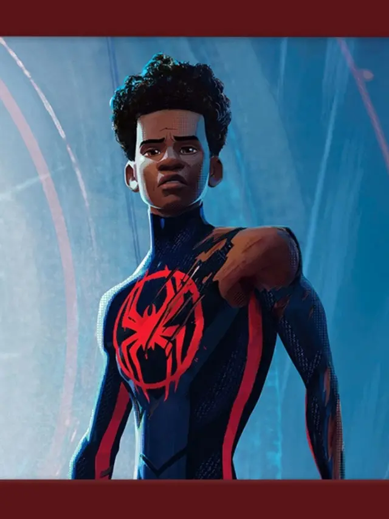

Miles Morales é o protagonista do filme e o Homem-Aranha de sua própria dimensão (Terra-1610). Um jovem talentoso e cheio de potencial, ele luta para equilibrar sua vida como um estudante comum e suas responsabilidades como herói. Em Além do Aranhaverso, Miles enfrenta novos desafios e conhece várias outras versões do Homem-Aranha, o que o faz refletir sobre seu lugar no multiverso e o que significa ser o Homem-Aranha.

História e Características: Miles Morales é um adolescente que assumiu o manto de Homem-Aranha em seu universo depois da morte de Peter Parker. Ele é um jovem afro-latino, com raízes em Nova York, que representa diversidade e inclusão de uma forma poderosa. Miles possui habilidades semelhantes às de Peter Parker, como força, agilidade e o “sentido aranha”, mas ele também tem poderes únicos, como a capacidade de ficar invisível e liberar uma rajada de energia bioelétrica, chamada de venom blast.
Desafios: Em Além do Aranhaverso, Miles está crescendo e lidando com dilemas mais complexos. Ele quer proteger sua própria realidade, mas também percebe que há grandes responsabilidades no multiverso. O conflito entre ser um adolescente comum e um herói o coloca em uma posição onde ele precisa decidir até onde vai seu dever como Homem-Aranha.
Relacionamentos: Miles tem uma relação complicada com sua família, especialmente agora que eles não sabem sobre sua identidade secreta. Além disso, sua amizade com Gwen Stacy e a conexão que ele desenvolve com outros Homens-Aranha fortalecem seu senso de comunidade e apoio.